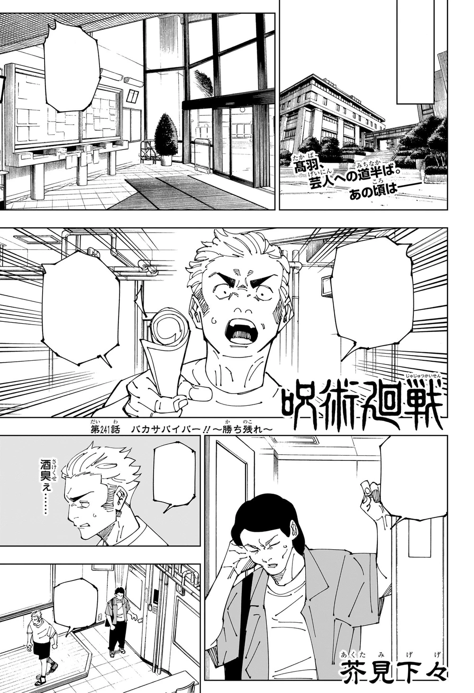

Luis Blas
Hey there! My name is Luis Blas, I am 19, and currently a 2nd yr college student. I was born in Oaxaca, but have been raised in Watsonville for the majority of my life. Currrently, i'm majoring in electrical enginnering and computer science but I'm aslo avid reader of fiction. Eventually, I hope to get a job in the area of robotics and agriculture.
Jujutsu Sorcerers
Jujutsu Sorcerers (呪じゅ術じゅつ師し Jujutsushi?) are individuals secretly trained and employed by the government in Japan to defend humanity from cursed spirits. The race of humans capable of using jujutsu are colloquially known as Sorcerers (術じゅつ師し), and the jujutsu prefix is often used to signify their alignment to Jujutsu High. Jujutsu sorcerers who use their powers for criminal purposes, such as murder, are called Curse Users (呪じゅ詛そ師し) while humans who cannot use jujutsu are called Non-Sorcerers (非ひ術じゅつ師).
Story
The story of Jujutsu Kaisen is set in a world where Cursed Spirits feed on unsuspecting humans and fragments of the legendary and feared demon Ryomen Sukuna have been lost and scattered about.Should any curse consume Sukuna's body parts, the power they gain could destroy the world as we know it. Fortunately, there exists a mysterious school of Jujutsu Sorcerers who exist to protect the precarious existence of the living from the supernatural! Read More

Latest Release
Foolish Survivor —Win and Remain—
Did you know that ...
A lot of people these days don't know that Jujutsu Kaisen 0, the story arc starring Yuta Okkotsu as the protagonist, was originally a one-shot published in 2017. Author Gege Akutami didn't have a clear idea of the story and just wanted to draw and write something he thought was cool, with this one-shot being the end result.This is why Yuta is the protagonist and not Yuji Itadori, and this is why elements such as Satoru Gojo's strength and Suguru Geto's characterization are a bit inconsistent with what was shown in the main story of the manga. Akutami thought to make it non-canon but ultimately chose to use it, adding the vast majority of these characters to the main series.